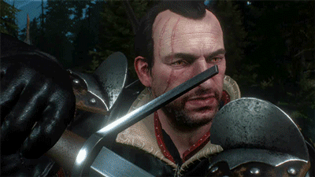

Ламберт
 Ламберт (ориг. Lambert) — второстепенный персонаж литературной саги, а также игр Ведьмак и Ведьмак 3: Дикая Охота, самый молодой из оставшихся в живых ведьмаков Школы Волка, отличающийся тяжёлым характером.